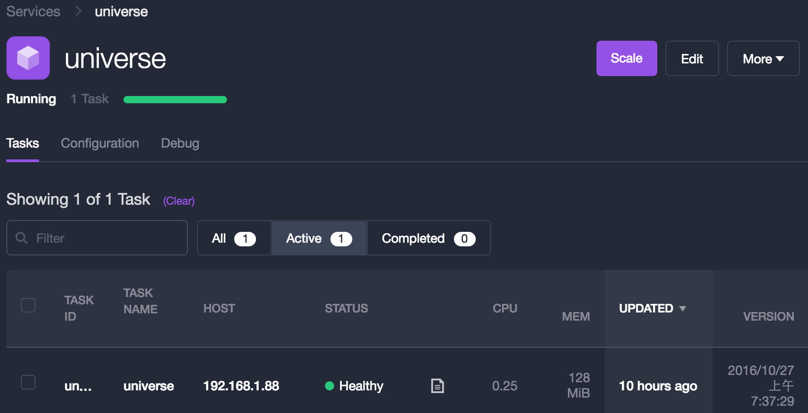
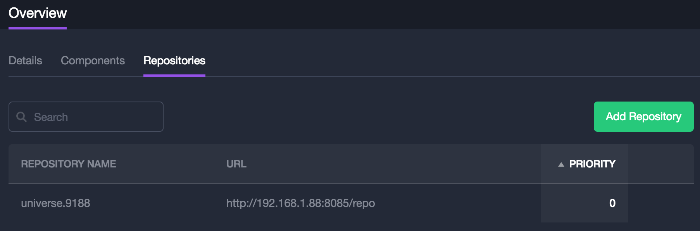

Universe
搭建本地Universe仓库
编译并构建仓库镜像
克隆Universe源码到本地：
git clone https://github.com/mesosphere/universe.git确认当前工作分支位于
version-3.x上。实际应用中很可能需要自定义或Patch部分应用服务，因此，推荐Fork仓库到自己的账户下。确保jsonschema工具在命令行环境中可用：
sudo pip install jsonschema- 在Universe目录下执行：
scripts/build.sh确认仓库编译成功，此时在
docker/server/target目录下生成了仓库的索引文件。按照下述命令生成Universe的容器镜像文件
DOCKER_IMAGE="chrisrc/universe-server" DOCKER_TAG="0.0.1" docker/server/build.bash DOCKER_IMAGE="192.168.1.51:5000/chrisrc/universe-server" DOCKER_TAG="0.0.1" docker/server/build.bash- 执行下述命令将Universe镜像推送到Docker Hub（或私有仓库）
DOCKER_IMAGE="chrisrc/universe-server" DOCKER_TAG="0.0.1" docker/server/build.bash publish
部署本地Universe到DCOS
在上述编译构建过程中的第3步，生成Universe索引文件的同时，在`docker/server/target`目录下也生成了一个marathon.json文件。
{
"id": "/universe",
"instances": 1,
"cpus": 0.25,
"mem": 128,
"requirePorts": true,
"container": {
"type": "DOCKER",
"docker": {
"network": "BRIDGE",
"image": "chrisrc/universe-server:0.0.1",
"portMappings": [
{
"containerPort": 80,
"hostPort": 8085,
"protocol": "tcp"
}
]
},
"volumes": []
},
"healthChecks": [
{
"gracePeriodSeconds": 120,
"intervalSeconds": 30,
"maxConsecutiveFailures": 3,
"path": "/repo-empty-v3.json",
"portIndex": 0,
"protocol": "HTTP",
"timeoutSeconds": 5 }
],
"constraints": [
[ "hostname", "UNIQUE" ]
]
}根据需要调整上述JSON内容，然后执行下述命令在DCOS上部署一个本地的Universe（如何安装DCOS CLI，请参考前述章节）：
dcos marathon app add marathon.json
部署成功后，从DCOS控制台可以查看部署的Universe服务：

通过DCOS CLI或者UI配置使用本地Universe：
dcos package repo add --index=0 http://192.168.1.88:8085/repo
